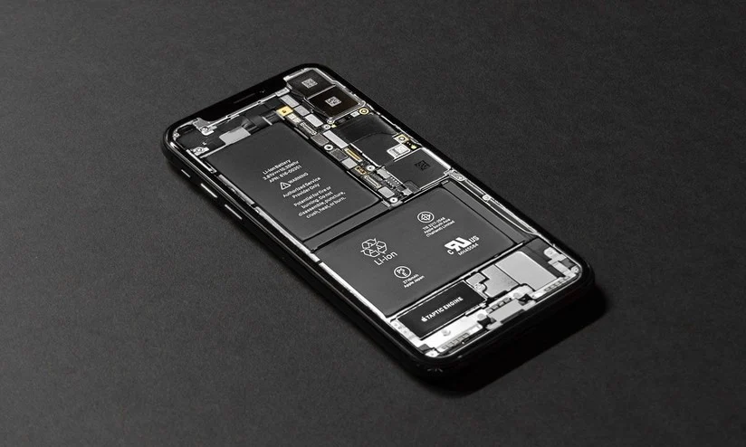
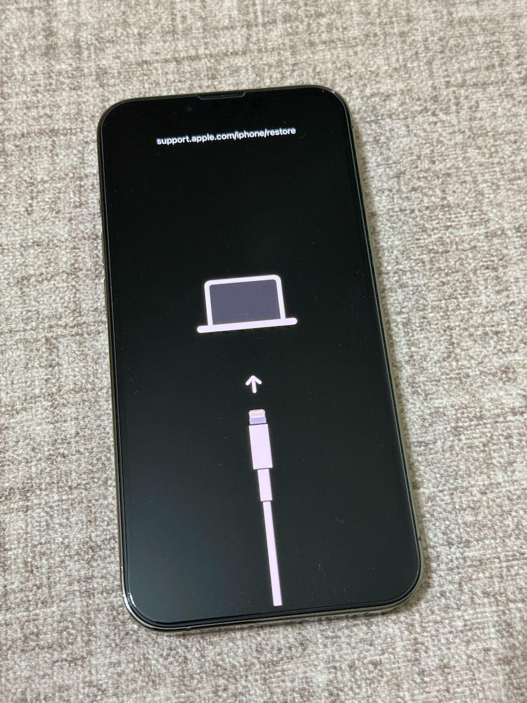

Reparo avançado de placas Apple
Diagnóstico e reparo avançado em placas.
Assistência técnica especializada com diagnóstico ágil, reparo confiável e suporte profissional para devolver o desempenho do seu equipamento no Flamengo, Rio de Janeiro.
Somos uma assistência técnica especializada Apple, mas também cuidamos de outros modelos de aparelhos com o mesmo compromisso. Começamos em 2019, fazendo atendimento domiciliar durante a pandemia, sempre buscando resolver cada caso com atenção e honestidade. Hoje, seguimos entregando reparos com qualidade, rapidez e confiança, sendo a loja mais bem avaliada no Google Meu Negócio.
Atendemos toda a Zona Sul do Rio de Janeiro, com sede no Flamengo na Rua Marquês de Abrantes, 168.
Diagnóstico e reparo avançado em placas.

Substituição de telas com instalação cuidadosa e acabamento profissional.

Troca de baterias com componentes de qualidade e testes de funcionamento.

Formatação, instalação, atualização e otimização de sistemas.
Substituição do vidro de Apple Watch com cuidado técnico e ótimo acabamento.
Troca de telas de iPad com peças de qualidade, instalação precisa e acabamento profissional.
Valores estimados para serviços frequentes. O orçamento final depende do diagnóstico técnico e do modelo do aparelho.
| Serviço | Descrição | Valor |
|---|---|---|
| Troca de tela iPhone | Substituição completa de display com testes funcionais | a partir de R$ 249,90 |
| Troca de bateria iPhone | Remoção e instalação | a partir de R$ 189,90 |
| Troca de vidro Apple Watch | Troca de vidro com acabamento técnico especializado | a partir de R$ 299,90 |
| Troca de tela iPad | Reparo de tela/vidro com inspeção final de qualidade | a partir de R$ 349,90 |
| Reparo avançado de placa | Diagnóstico em bancada e micro-solda quando necessário | a partir de R$ 390,00 |
| Software e recuperação | Atualização, restauração e otimizações | a partir de R$ 149,90 |
* Valores sujeitos a alteração sem aviso prévio, conforme peça, modelo e disponibilidade.
Depoimentos de clientes sobre atendimento, qualidade técnica e prazo de entrega.
Atendimento excelente, explicaram tudo com transparência e meu iPhone ficou perfeito após a troca de tela.
Serviço rápido e profissional. Fiz troca de bateria e o aparelho voltou a durar o dia inteiro.
Levei meu Apple Watch para reparo do vidro e o resultado ficou ótimo. Equipe muito atenciosa.
Meu iPad estava sem imagem e resolveram no mesmo dia. Atendimento muito honesto e prazo cumprido.
Fizeram diagnóstico completo e me explicaram todas as opções. Serviço limpo e com garantia.
Troca de vidro do Apple Watch impecável. Voltou como novo e com ótimo acabamento.
Preço justo, atendimento rápido no WhatsApp e total transparência no orçamento. Recomendo muito.